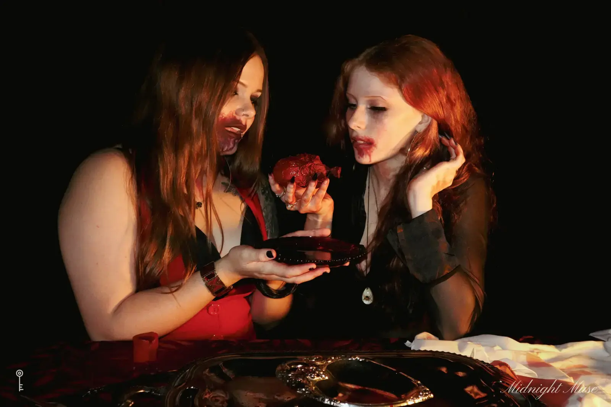
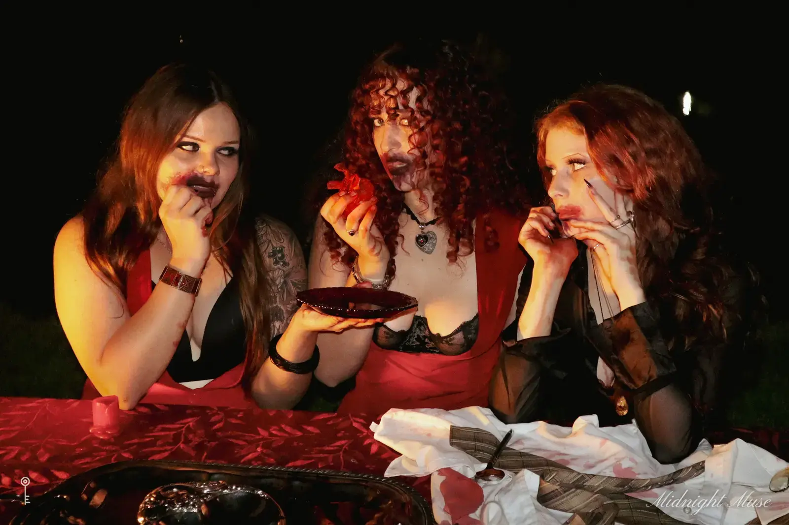
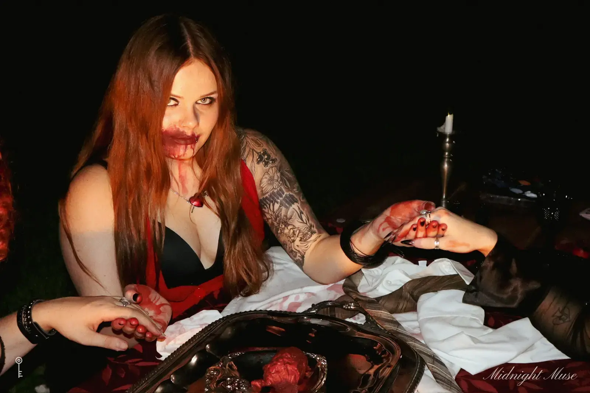

II A doll house by Dani
The Tea Party
Red velvet, candles and a tea service for three



Every set is built for the person in it. Tell Dani what yours looks like.
Describe your set
II A doll house by Dani
Red velvet, candles and a tea service for three



Every set is built for the person in it. Tell Dani what yours looks like.
Describe your set